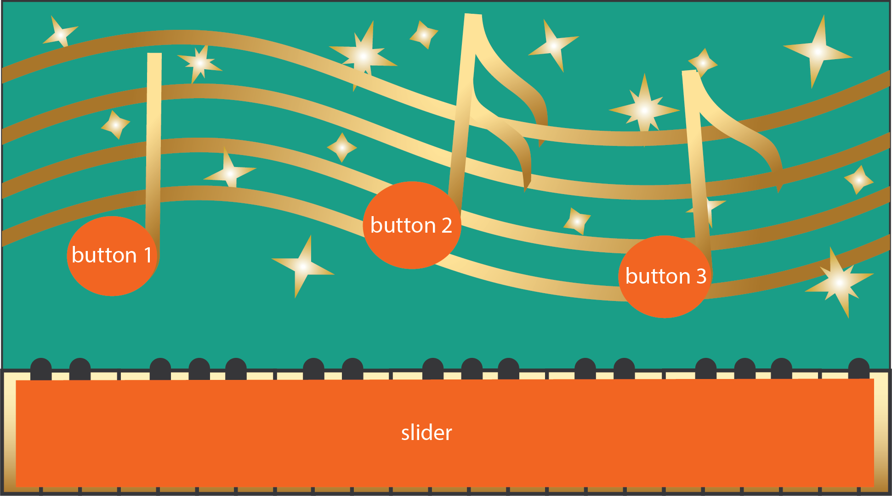
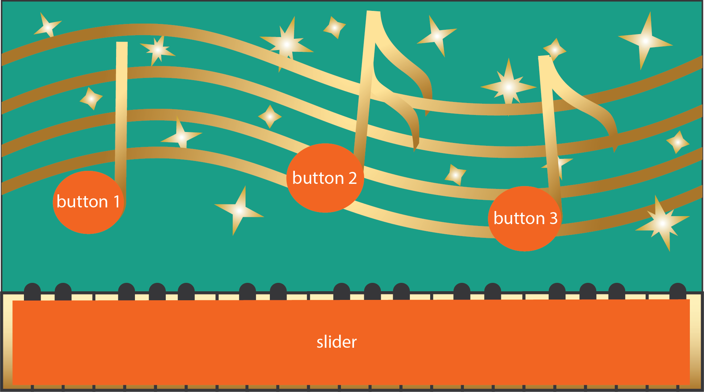

In this lab series, you will create the interactive music card shown below.
Underneath the visual design, the music card has an inkjet printed circuit with touch buttons and a slider that allow the user to play songs and control the volume. The card is connected to a microcontroller for analyzing user input and then sends the signals to a program called Processing for visualizing user input on screen.
For each lab and pset in 6.810, you have the choice to either use our template design files or to make your own design. In the case of lab 1-4 that means either using our card design (three notes + piano keyboard) or to make your own card design. If you are a beginner in electronics and fabrication, we recommend you go with the default design since it is the safest path to success. However, if you are a designer at heart and you have some prior knowledge in electronics and making, it may be more interesting for you to make your own. If you decide to make your own, please make sure you read a bit ahead what's coming in lab 2/3/4. There is also the risk that your own design will have its own bugs that we are less knowledgable about. Below you see a custom design from 6.810 student Diego Pinochet from last year that features a circular slider rather than a straight one and additinal input buttons for extra functionality.


 
